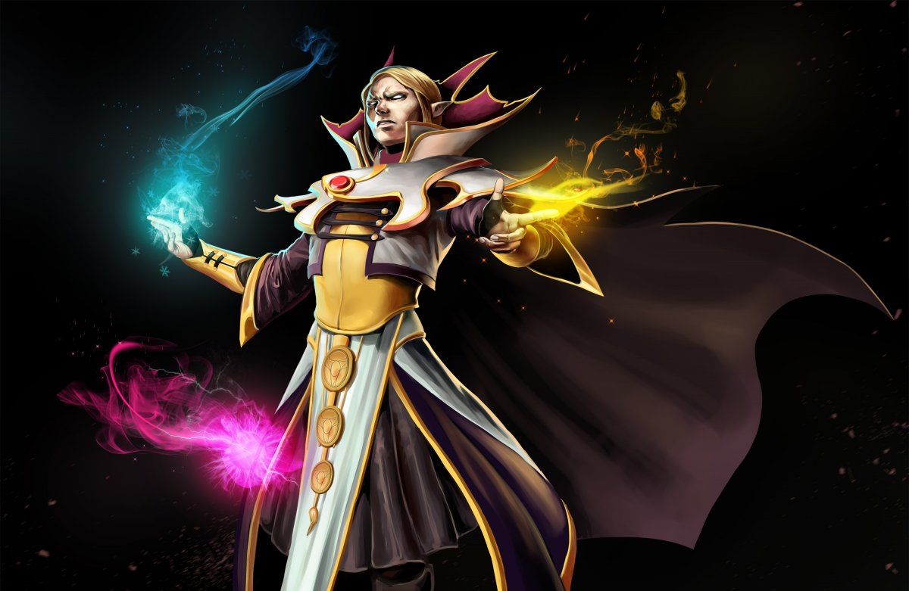
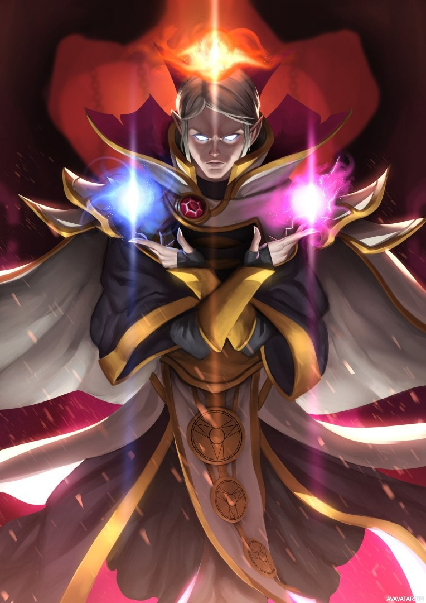

Invoker — это герой с дальним типом атаки, основным атрибутом которого является Intelligence attribute symbol.png интеллект. Это единственный герой в игре, количество способностей которого равно 10 плюс три сферы и ультимативная способность. Сфера Quas позволяет управлять стихией льда. Каждая активная сфера Quas увеличивает скорость регенерации здоровья. Сфера Wex позволяет управлять стихией молнии. Каждая активная сфера Wex увеличивает скорость атаки и передвижения. Сфера Exort позволяет управлять стихией огня. Каждая активная сфера Exort дополнительно увеличивает урон от ваших атак. Все сферы героя не имеют перезарядки и не требуют маны, а также герой может переключать сферы быстро по своему усмотрению.
Магия в своей самой ранней, даже можно сказать, самой мощной форме, всегда являлась в основном искусством памяти. Она не требовала техник, палочек или других принадлежностей, за исключением разума самого чародея. Всё, что ему было нужно — мнемонические средства, помогающие колдующему вспомнить в полных деталях ту психологическую формулу, что раскроет магическую силу. Величайшие волшебники тех дней были одарены отличной памятью, а сами заклинания были настолько сложны и громоздки, что чародеи были вынуждены на чем-то специализироваться. Однако даже самые отличные волшебники могли надеяться лишь на то, что они запомнят за всю свою жизнь три-четыре заклинания, не более. Обычные маги знали всего два заклинания, так что это не такое уж и необычное явление, когда деревенский чародей знал только одно заклинание, да и то требовало титанических усилий, куч подсказок и инструкций, работающих, как лекарство от забывчивости, в те редкие случаи, когда это самое заклинание просили продемонстрировать. Но среди всех этих волшебников было всего одно, но гениальное и владеющее огромной памятью исключение, и имя ему — Invoker. Уже в своей юности взрослый не по годам волшебник сумел набить руку на использовании не четырех, не пяти, и даже не семи, а не менее десятка заклинаний, которые он сотворял практически мгновенно! Еще больше он уже и так знал, но просто считал бесполезными. Одно из его заклинаний — Sempiternal Cantrap — было такой огромной мощи, что следы от его использования в первые дни создания мира видны до сих пор (или просто расщеплены на атомы). Большинство почти-бессмертных живут тихо, пряча от мира свой секрет, но Invoker — отнюдь не тот, кто хранит свой дар в кладовке. Он — древний, знающий гораздо больше остальных, разум которого все еще имеет свободное место для рассуждений о смысле существования… как и для колдовства, которым он развлекает себя, наблюдая за последними днями этого мира.
 Обратна на вторую страницу Оыбратна на первую страницу